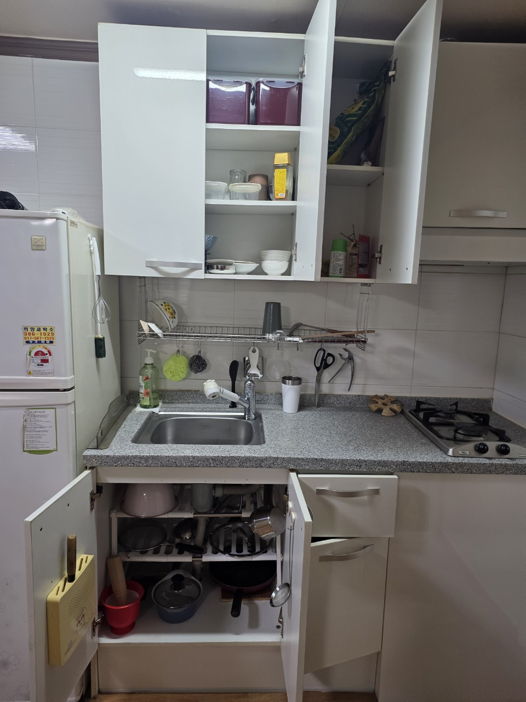

현관만 막힌 세대는 반나절, 전 방이 적치면 하루를 봅니다. 계단만 있는 고층은 더 걸릴 수 있습니다.
수택2동 · 고밀도 주거
수택2동 쓰레기집청소,
수택2동 쓰레기집청소,
고밀도 세대 반출 상담
수택2동은 구리시에서 면적이 가장 작은 행정동 중 하나입니다. 인구 밀도는 높아 빌라·아파트 세대 내부 적치 문의가 많습니다. 차량을 세울 자리가 부족해, 포장을 끝낸 뒤 순환 상차를 합니다. 구리 올바른정리는 수택2동 쓰레기집청소를 통로 확보부터 시작하고, 남길 물건이 있으면 유품정리를 같은 날 이어서 합니다.
SERVICE
구리시 수택2동에서 맡기는 작업
수택2동은 문이 반만 열리는 적치 세대 상담이 다른 동보다 잦습니다.
유품정리
수택2동 소형 유품 정리
방이 작아 유품이 침대 위까지 쌓입니다. 먼저 발 디딜 곳을 만든 뒤 지정 물건을 고릅니다. 가족이 멀리 있으면 실시간 사진으로 남길 물건을 확인합니다.
쓰레기집청소
수택2동 전 세대 적치 제거
화장실·싱크대를 못 쓰는 상태는 쓰레기집청소 범위입니다. 복도 적재가 민원이 되어, 내린 즉시 차량으로 옮깁니다. 환기를 위해 작업 중 창문을 열어 둡니다.
PRICE
수택2동 비용이 달라지는 지점
수택2동은 면적이 작아도 운반 횟수가 많아 인원 배치가 중요합니다.
* 부가세 별도 · 시작가이며 현장 확인 후 확정
유품정리
45만원 부터~
유품 45만원부터이나, 통로 확보 선작업이 있으면 시간이 더해집니다.
고독사 특수청소
80만원 부터~
밀폐 원룸 악취는 80만원부터 특수청소입니다.
쓰레기집·일반폐기물
30만원 부터~
전 방 적치는 30만원 시작가에 인원·차량 회전이 붙습니다.
GUIDE
수택2동은 왜 쓰레기집청소 문의가 많나요?
고밀도 소형 주거는 물건이 밖으로 나갈 곳이 없어 세대 안에 쌓입니다.
수택2동 쓰레기집청소는 어디서부터 손대나요?
현관입니다. 작업자가 들어갈 폭이 없으면 유품 분류도 시작할 수 없습니다. 봉투와 이불을 먼저 내려 발판을 만들고, 그다음 방 단위로 제거합니다. 수택2동은 이 선작업이 전체 시간의 상당 부분을 차지합니다.
수택2동 유품정리는 실시간 사진 확인이 되나요?
됩니다. 밀집 주거는 가족이 현장에 오기 어려운 경우가 많아, 의심 물건은 사진으로 물어보고 버립니다. 답장이 늦는 물건은 임시 상자에 담아 두고 나머지부터 진행합니다.
이중 주차가 심한 날은 어떻게 하나요?
상차를 두세 번으로 쪼갭니다. 한 번에 다 실으려다 길이 막히면 작업이 멈춥니다. 수택2동 반출은 속도보다 회전이 중요합니다.
수택1동·3동과 수택2동 견적 차이는요?
시작가는 같습니다. 2동은 대기 공간 부족, 1동은 시장 통행, 3동은 토평 창고형이 가감 이유입니다.
수택2동 상담 사진 팁은?
문이 얼마나 열리는지 현관 사진, 방 천장까지 쌓였는지 한 장, 화장실 사용 가능 여부 한 장이면 충분합니다.
PROCESS
수택2동 작업 순서
수택2동은 통로 확보를 별도 단계로 둡니다.
STEP 01
현관 열기문 앞 적치를 내려 작업 인원이 들어가게 합니다.
STEP 02
사진 확인 분류유품 후보를 사진으로 확인하며 방을 비웁니다.
STEP 03
순환 반출주차 공백이 생기는 짧은 시간에 여러 번 실어 냅니다.



FAQ
수택2동에서 자주 묻는 질문
검색·AI 답변에 쓰일 수 있도록 이 지역 기준으로 짧게 정리했습니다.
남길 물건이 소수면 쓰레기집청소를 본작업으로 하고 유품은 상자만 따로 담습니다.
일반 반출 30만원, 유품정리 45만원부터입니다. 선작업 인원이 필요하면 조정됩니다.
복도에 쌓지 않고 즉시 내립니다. 필요하면 작업 시간을 오전으로 당깁니다.